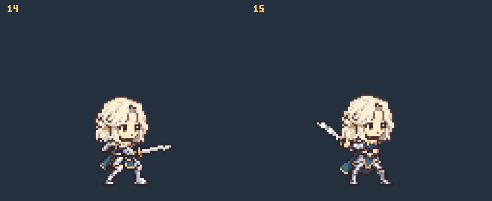
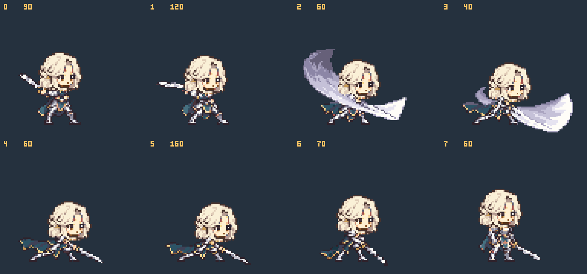
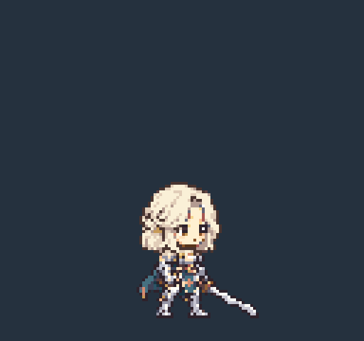
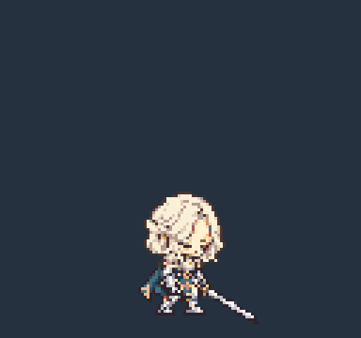
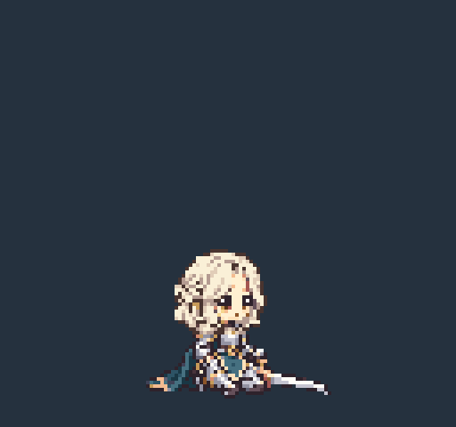

R15 · 기사 한손검 베기
뒤로 당기기 → 큰 부채꼴 베기 → 낮은 자세의 긴 멈춤 → 회수
8장 · 660ms · 타격 3번(0부터 셈), 270–310ms · 같은 가까운 손
2등신 / 48px 대기 키 / 128×120 캔버스 / 기준점 (64,112)
공격 외 5개 동작과 캐릭터 디자인은 R14 보존. RO의 동작만 참고했으며 아래 그림은 모두 자체 캐릭터입니다.
매니페스트 · 제작 노트 · 검증 결과
왼쪽 R14 / 오른쪽 R15

각 버전의 원래 시간을 유지합니다. R14는 560ms 이후 대기로 기다렸다가 R15와 함께 다시 시작합니다.
공격 재생 · 프레임 확인
1배 GIF · 4배 GIF · 프레임 시트
8장 · 번호 / 유지 시간(ms)

다른 동작 · R14 그대로





GIF와 이 페이지는 검토용으로 반복합니다. 게임용 매니페스트의 공격은 loop=false입니다.